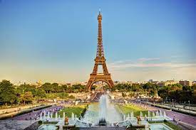

Bem-Vindo à minha página sobre lugares turísticos da Europa!
Paris, França
Paris é conhecida como a cidade do amor. A Torre Eiffel e o Louvre são apenas alguns dos muitos pontos turísticos.
Roma

Roma é famosa por suas ruínas antigas, como o Coliseu e o Fórum Romano. O país é o quinto mais populoso da Europa, sendo que a sua população encontra-se concentrada na porção norte, onde estão os principais centros econômicos do país.
Barcelona e Espanha
Barcelona é conhecida pela arquitetura única de Antoni Gaudí, especialmente a Sagrada Família.